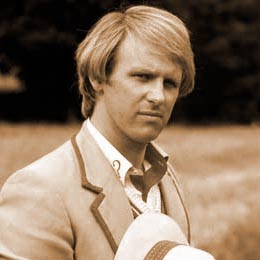

|  |
Peter Davison was chosen as the Fifth Doctor due to his critically acclaimed role as Tristan Farnon in the BBC series. The shows producers wanted an actor who presented a physical contrast to the Fourth Doctor. The Fifth Doctor's era was notable for a "back to the basics" attitude, in which "silly" humour and horror was kept to a minimum, and more scientific accuracy was encouraged by the show's producer, John Nathan-Turner. It was, at times, a darker and grittier series, in part for seeing the death of one of his companions, Adric. It was also notable for the reintroduction of many of the Time Lord's enemies, such as the Master, Cybermen, Omega, the Black and White Guardians, and the Silurians. |